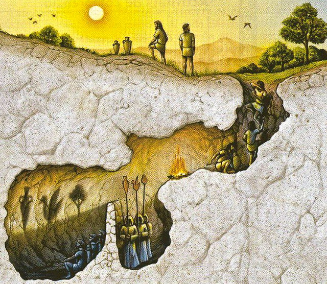

Quantifying Uncertainty II
Grayson White
Math 141
Week 7 | Fall 2025
Announcements
- Midterm exam available today!
- Finish take-home by Weds 10am (2.5hr exam)
- Make sure you’ve signed up for an oral exam time!
- Discussion of midterm logistics (cloning repo, Gradescope process, rendering, office hours)
Goals for Today
- Continue our discussion of quantifying uncertainty
- Key ideas:
- sampling variability, sampling distributions, populations, samples, parameters, statistics.
- Key ideas:
- Construct sampling distributions in
R
Statistical Inference
The ❤️ of statistical inference is quantifying uncertainty
The ❤️ of statistical inference is quantifying uncertainty
# A tibble: 1 × 1
meanFINCBTAX
<dbl>
1 62480.Like with regression, need to distinguish between the population and the sample
- Parameters:
- Based on the population
- Unknown then if don’t have data on the whole population
- EX: \(\beta_o\) and \(\beta_1\)
- EX: \(\mu\) = population mean
- Statistics:
- Based on the sample data
- Known
- Usually estimate a population parameter
- EX: \(\hat{\beta}_o\) and \(\hat{\beta}_1\)
- EX: \(\bar{x}\) = sample mean
Statistical Inference
Goal: Draw conclusions about the population based on the sample.
Plato’s allegory of the cave

Statistical Inference
Goal: Draw conclusions about the population based on the sample.
Main Flavors
Estimating numerical quantities (parameters).
Testing conjectures.
Estimation
Goal: Estimate a (population) parameter.
Best guess?
- The corresponding (sample) statistic
Key Question: How accurate is the statistic as an estimate of the parameter?
Helpful Sub-Question: If we take many samples, how much would the statistic vary from sample to sample?
Need two new concepts:
The sampling variability of a statistic
The sampling distribution of a statistic
Sampling Distribution of a Statistic
Steps to Construct an (Approximate) Sampling Distribution:
Decide on a sample size, \(n\).
Randomly select a sample of size \(n\) from the population.
Compute the sample statistic.
Put the sample back in.
Repeat Steps 2 - 4 many (1000+) times.
Sampling Distribution of a Statistic

Center? Shape?
Spread?
- Standard error = standard deviation of the statistic
What happens to the center/spread/shape as we increase the sample size?
What happens to the center/spread/shape if the true parameter changes?
Let’s Construct Some Sampling Distributions using R!
Important Notes
To construct a sampling distribution for a statistic, we need access to the entire population so that we can take repeated samples from the population.
- Population = Mt Tabor trees
But if we have access to the entire population, then we know the value of the population parameter.
- Can compute the exact proportion of maple trees in our population.
The sampling distribution is needed in the exact scenario where we can’t compute it: the scenario where we only have a single sample.
We will learn how to estimate the sampling distribution soon.
Today, we have the entire population and are constructing sampling distributions anyway to study their properties!
New R Package: infer

New R Package: infer
- Will use
inferto conduct statistical inference.
Our Population Parameter
Create data frame of Mt Tabor trees:
Add variable of interest:
Population Parameter
Random Samples
Let’s look at 4 random samples.
Constructing the Sampling Distribution
Now, let’s take 1000 random samples.

- Shape?
- Center?
- Spread?
Properties of the Sampling Distribution
The standard deviation of a sample statistic is called the standard error.
Properties of the Sampling Distribution
For approximately bell-shaped distributions, about 95% of observations fall within 1.96 standard deviations of the population’s mean \(p\).
Huge Implication:
The sampling distribution for the mean, \(\hat p\) is approximately bell-shaped
… and is centered at the population mean, \(p\).
So 95% of all sample statistics, \(\hat p\) fall within 1.96 standard errors of \(p\)!
What happens to the sampling distribution if we change the sample size from 20 to 100?
# Construct the sampling distribution
samp_dist_100 <- tabor %>%
rep_sample_n(size = 100, reps = 1000) %>%
group_by(replicate) %>%
summarize(
statistic = mean(tree_of_interest == "yes")
)
# Graph the sampling distribution
ggplot(data = samp_dist_100,
mapping = aes(x = statistic)) +
geom_histogram(bins = 13)Changing sample size
As the size of our sample increases, the variability of the sampling distribution decreases.
This makes sense: more data –> more precise estimates
Changing sample size
Both sampling distributions are still centered at \(p\), but
We can see that 95% of samples lie within different ranges for different \(n\)
As \(n\) increases, sampling variability (i.e. the standard error of the sampling distribution) decreases
What if we change the true parameter value?
A Word of Warning: The Shape of the Sampling Distribution
Sometimes, you need a large enough sample for your sampling distribution to look bell-shaped.
A Word of Warning: The Shape of the Sampling Distribution
Sometimes, you need a large enough sample for your sampling distribution to look bell-shaped.
A Word of Warning: The Shape of the Sampling Distribution
Sometimes, you need a large enough sample for your sampling distribution to look bell-shaped.
Example: forest biomass in Oregon
A Word of Warning: The Shape of the Sampling Distribution
Sometimes, you need a large enough sample for your sampling distribution to look bell-shaped.
Example: forest biomass in Oregon

On Lab 6:
Will investigate what happens when we change the parameter of interest to a mean or a correlation coefficient!
Key Features of a Sampling Distribution
What did we learn about sampling distributions?
Centered around the true population parameter.
As the sample size increases, the standard error (SE) of the statistic decreases.
As the sample size increases, the shape of the sampling distribution becomes more bell-shaped and symmetric.
Question:
How do sampling distributions help us quantify uncertainty?
Question:
If I am estimating a parameter in a real example, why won’t I be able to construct the sampling distribution?
Cliffhanger:
How can I quantify uncertainty in a sample statistic when I only have access to one sample??